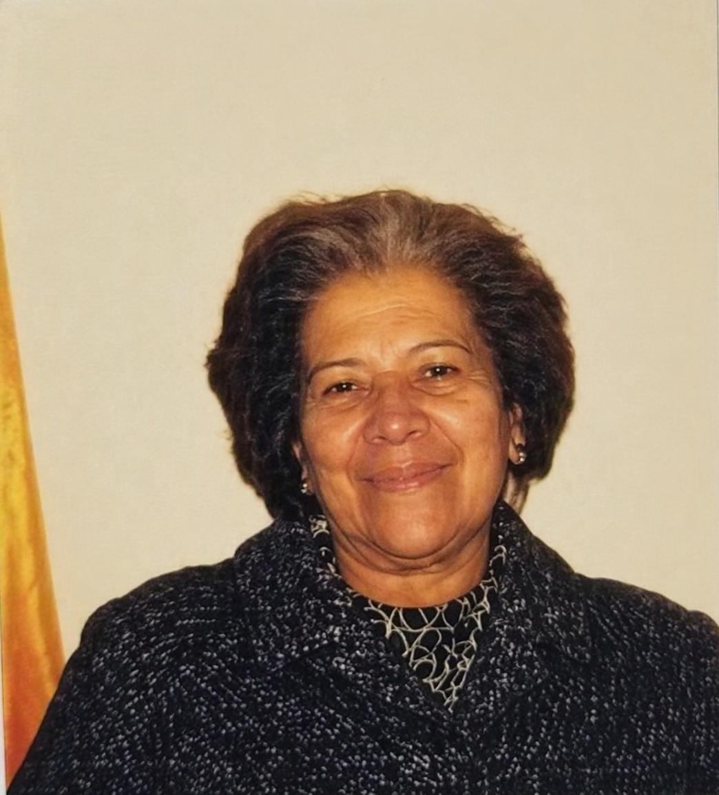
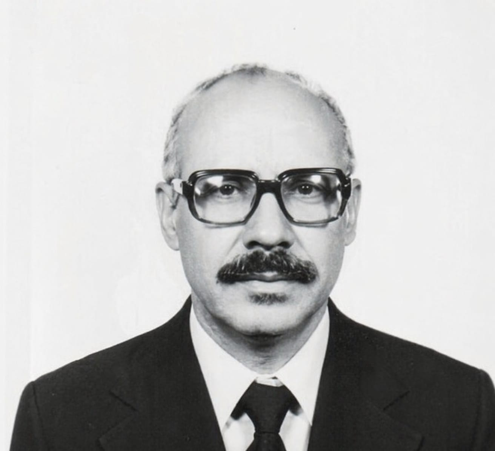
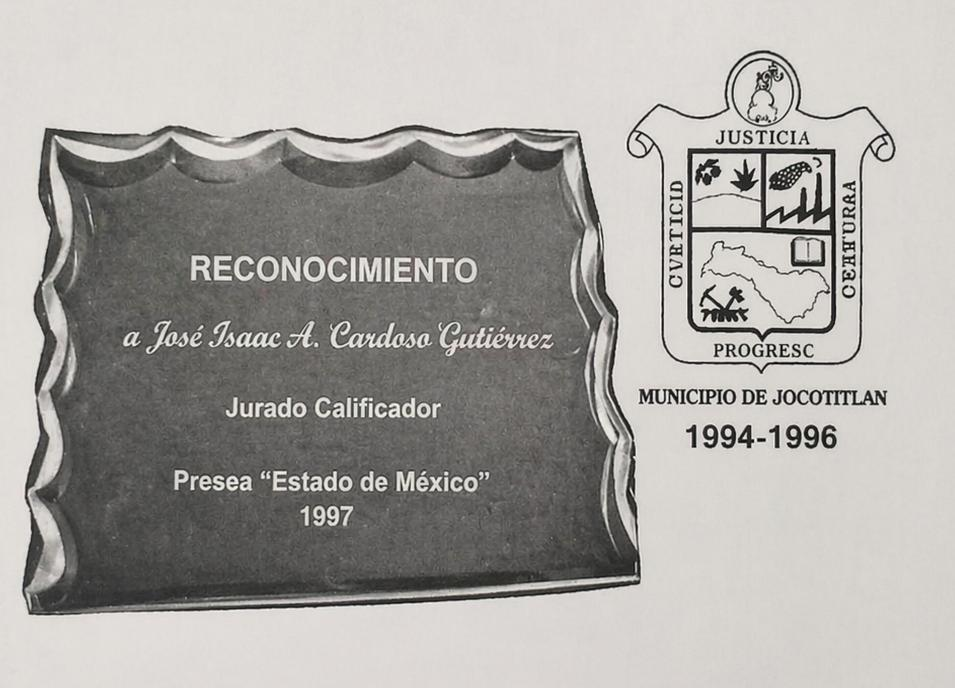

"JOCOTITLÁN, ESTADO DE MÉXICO"
DIRECTORIO CORREO DE JOCOTITLAN
Periódico mensual
Director:
Antonio Cardoso G.
Jefe de Redacción:
Profra. Ma. C. de Pedroza
Colaboradores:
Ma. Esther Gutiérrez Pliego, Osnaldo Hernández, José Legorreta, Fortino Medrano.
Fotógrafos:
Salvador Chimal, Cándido Gómez, Rodolfo Maldonado, David Molina.
Impreso en:
Editorial Chimal de Toluca, S.A. V. Carranza 728 Ote. Tel. 336-44 Toluca, Edo. de México
PROFA, CELIA CEDILLO DE PEDROZA
Una figura representativa de los promotores del arte dramático en Jocotitlán fue la profesora Celia Cedillo Chimal, quien nació un 23 de junio de 1911 en esta comunidad. A finales de los años 20 forma parte de la “SOCIEDAD DRAMATICO MUTUALISTA, AMANDO BARRANCO”, representando varias obras teatrales.
Años más tarde emigra a los Estado Unidos de Norte América radicando por largo tiempo en la ciudad de Chicago, lugar donde ejerció su profesión en la escuela bilingüe “Lázaro Cárdenas”. En la primera mitad de los años 70, regresa a Jocotitlán y con la misma inquietud de su juventud, logra el resurgimiento del arte dramático en su muy querido pueblo.
En 1986 es nombrada CRONISTA MUNICIPAL. Durante sus tres años de trabajo logró editar la MONOGRAFIA MUNICIPAL JOCOTITLAN REGION V. Incansable promotora de actividades culturales, fue una de las figuras centrales que hicieron posible la publicación del periódico “CORREO DE JOCO” fungiendo como jefe de redacción al lado del director José Isaac Antonio Cardoso Gutiérrez (1986-1993).
En 1989 se le nombró CRONISTA HONORARIA Y CIUDADANA DISTINGUIDA por su servicio social voluntario en beneficio de la cultura de Jocotitlán. Su muerte el 22 de octubre de 1993 dejó un gran pesar en los corazones de las personas que tuvieron el placer de compartir con ella momentos inolvidables; más nunca permanecerá ajena al contexto cultural de Jocotitlán.

PROFA, CELIA CEDILLO DE PEDROZA
C. José Isaac Antonio Cardoso Gutiérrez
Iniciador y director del periódico local “CORREO DE JOCOTITLÁN” (1986-1993).
Autor del Escudo del Municipio de Jocotitlán (1994-1996).
Presea Estado de México (1997).
Dibujante e ilustrador en los libros de texto gratuito en la década de los sesentas.
Sus caricaturas, dibujos de historietas y tiras cómicas, fueron publicadas en El Universal, el gran diario de México.
Coordinó una producción artística en una importante publicación del Instituto Mexiquense de Cultura.

C. José Isaac Antonio Cardoso Gutiérrez

"DIBUJANTE Y CARICATURISTA DE PROFESIÓN"

AGUSTIN LARA